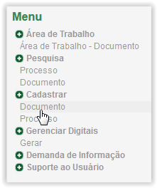
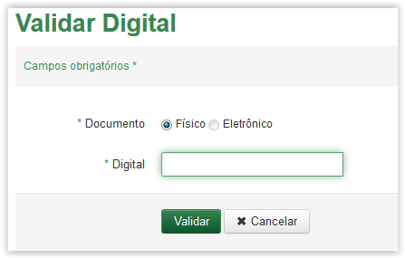
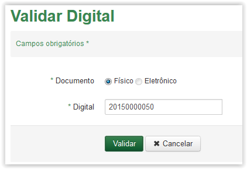
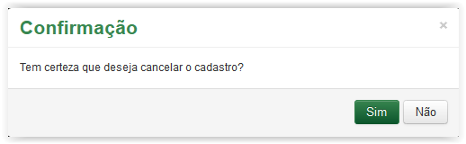
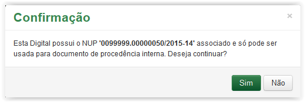
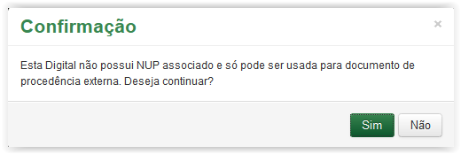
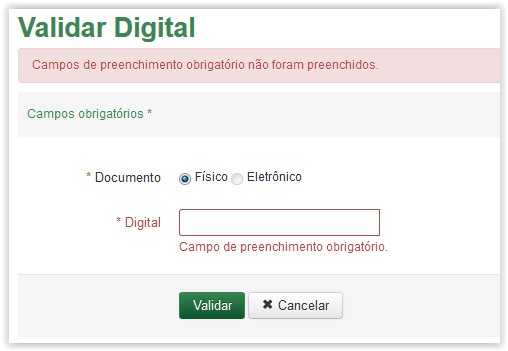
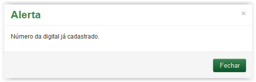
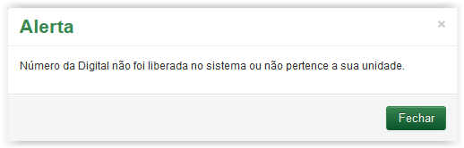

Cadastrar Documento
Para validar um documento clique na opção Documento no menu do sistema:

Menu do sistema SGDoc-e
A tela Validar Digital será apresentada. Observe que a tela possui campo obrigatório (Veja Nota 1):

Tela de Validar Digital
 Preenchendo a validação da digital!!
Preenchendo a validação da digital!!

Tela de Validar Digital preenchida
 para desistir ou, após preencher o campo Digital,clique no botão para validar a digital informada. o sistema apresenta a mensagem abaixo:
para desistir ou, após preencher o campo Digital,clique no botão para validar a digital informada. o sistema apresenta a mensagem abaixo:
Mensagem de confirmação
 da mensagem de confirmação, o sistema retorna para a tela Validar Digital e ao clicar no botão o sistema apresenta a Área de Trabalho.
da mensagem de confirmação, o sistema retorna para a tela Validar Digital e ao clicar no botão o sistema apresenta a Área de Trabalho.
Mensagem de confirmação - Documento de Procedência interna

Mensagem de confirmação - Documento de Procedência externa
, o sistema retorna para a tela Validar Digital e ao clicar no botão o sistema apresenta a tela Cadastrar Documento (Procedência Interna) ou Cadastrar Documento (Procedência Externa).IMPORTANTE!!
 Lembrete:
Lembrete:
A opção de Documento Eletrônico está desabilitado tendo em vista que a versão atual do SGDoc-e abrange somente o cadastro de documentos físicos no sistema!
 Nota 1:
Nota 1:
Os campos obrigatórios são indicados pelo sinal de asterisco (*) na cor verde ao lado do nome. O campo Comentário, portanto, é obrigatório, ou seja, se houver uma tentativa de salvar o comentário em branco, o sistema apresenta uma mensagem de erro: "Campos de preenchimento obrigatório não foram preenchidos.".

Comportamento da tela Validar Digital ao tentar validar uma digital em branco.
 Nota 2:
Nota 2:
Caso a digital já tenha sido cadastrada, o sistema apresenta a seguinte mensagem:

Mensagem de alerta sobre digital já cadastrada
 Nota 3:
Nota 3:
Caso a digital não esteja disponível ou não pertença ao setor do usuário logado, o sistema apresenta a seguinte mensagem:

Mensagem de alerta sobre digital não ter sido liberada ou não pertencer a unidade do usuário logado
Created with the Personal Edition of HelpNDoc: Easily create CHM Help documents